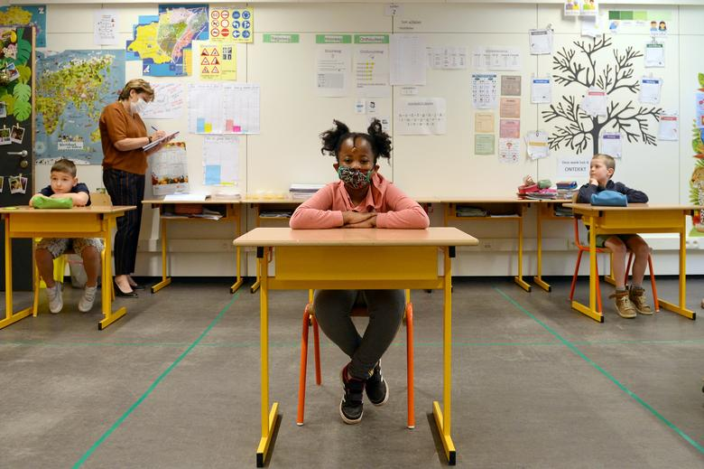
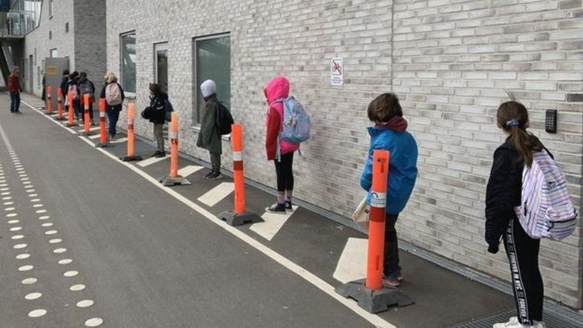

Pandemic Presents Difficulty for School Students
Many students nationwide will head back to school this fall, donning their masks and learning six feet apart from one another. This past March, schools across the country switched to “remote learning”, where students attended class via Zoom from the comfort of their own homes. While most schools seamlessly transitioned to this new normal, some students did not adjust as well, and subsequently fell behind. Oftentimes, students who required extra time on assignments, additional meetings with teachers, and who usually succeed in a physical classroom, struggled to finish the school year strong. As the country braces a potential second-wave of COVID-19, educators and students alike worry about the setbacks of remote learning throughout this upcoming school year.
Students Use Zoom to Study for AP Exams, Credit: latimes.com
Several Americans are struggling financially and mentally during this pandemic, so how are young students so vastly affected? This issue not only affects the students unable to thrive off of remote learning, but their families, educators, and the Americans who fund their public education. According to an article from Brookings.edu, experts forecast substantial setbacks for students, especially those in grades K-12. After reviewing previous standardized test scores, research predicts students are most likely to fall behind in mathematics of all subjects. Not only does this affect a wide variety of students, but their educators, as well. The authors of this article suggest “educators may want to work with students to determine growth rates needed to catch up and set learning goals for the year that are ambitious but obtainable.” The effects of this pandemic on students are often compared to similar effects from Hurricane Katrina. After the natural disaster struck and class reconvened, students found it difficult to concentrate. Much like in those circumstances, many students finished up this past school year with their highest potential unachieved.
The Importance
According to edweek.org, as of May 2020, 1,424 Maryland public schools were closed due to the pandemic. Further, on a global scale, the ICEF Monitor reports the COVID-19 pandemic has already affected 87 percent of students across the world. This sudden disruption to learning put an enormous strain on the way that schools operated daily. Though it is currently July, this topic remains relevant and pressing. Going forward, remote learning will remain a detriment to students with learning disabilities, students who rely on school for meals and afterschool care, and caretakers who cannot work with children home fulltime. Students of all ages navigated the world of remote learning, beginning with online Zoom classes and ending with electronic submission portals for virtual assignments.
- ASCD.org
Factors To Consider
Are there differences in the obstacles public school students and private school students face during the pandemic? The simple answer is yes, there are differences amongst those who are struggling, often depending on whether they attend public or private schools. However, students, regardless of the type of education they receive, all needed to adapt to remote learning. It is astonishing to recognize the sheer magnitude of the pandemic on public education. These public schools, funded by their respective state governments, are in place give students throughout each state, a "free" place to learn. There is a notion that because families do not pay tuition to send their children to public school, their children are not as likely to receive the appropriate guidance as remote learning becomes the new normal.
(Left Image) Tips for Online Learning, Credit: Goodcollege.Online
Socioeconomic status, disability and race are just a few of the external factors that play a role in a student’s adaptability to these difficult circumstances. Students in need of financial support often fell behind, due to a lack of technological resources within their homes. Further, many students rely on their schools to feed them and fund the school supplies they use in the classroom. The caretakers of these students may have lost their jobs or substantial income throughout the pandemic. The endless cycle of financial burdens puts young students at a severe disadvantage from their peers. This financial situation is most common in public schools, however, students in private schools experience these financial disparities, as well.
Any physical or mental disability can drastically impact a child’s schoolday. With many students needing one-on-one counseling or extra time for assignments, working from home can be an extreme roadblock for these students. Students with disabilities of all kinds often rely on their school programs to assist them with schoolwork and carrying out other daily activities, such as exercising and eating fulfilling meals.
As the pandemic worsened, data revealed that students of color are disproportionately affected by the shutdown of their schools. According to an article from The Washington Post, students of color are less likely than their white peers to succeed under the conditions brought upon by COVID-19 shutdowns. Racial disparities in education are currently heightened, according to the article, because the American education system is built to “provide whiter and wealthier communities the support they need to bridge the gap: individual and small-group tutoring, accommodations for or suspension of high-stakes testing, robust enrichment and summer learning.”
What's Next?
Student Masked in School, Credit: Reuters.com
What can we all do, as catalysts for an easy transition, to aid students going forward?
With no real end to the pandemic in sight, students must continue to adjust the school routines they have all become accustomed to. Parents, educators, and the pupils themselves will shift gears, realigning their learning styles during this time. Ascd.org suggests educators, empower students, and maintain close relationships. Without the help of their educators, "students can’t solve problems, learn, self-regulate, or exhibit empathy or self-compassion if they're marinating in fear.” UNICEF and other online resources advise parents and teachers to focus on consistency in their child’s school routine; this will hopefully alleviate the stress students now face. It is also important to relay current news about COVID-19 to the students. Once they return to school to study their subjects, they should also be equipped with safety measures and social cues to keep them well. Though the circumstances of the country and the entire world are unprecedented, it is our duty to always uplift the impressionable minds of students. As the pandemic continues, so does the eagerness of young people to learn and engage in normal school activities. In working together to help struggling students, we can further assure that the future is in good, washed hands.
Students Line Up for School Socially Distanced, Credit: BBC Newsq